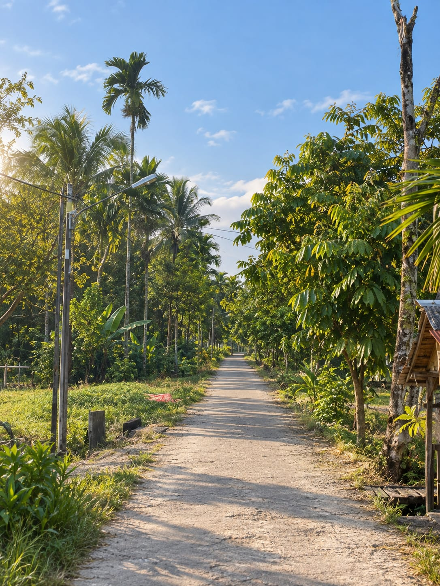
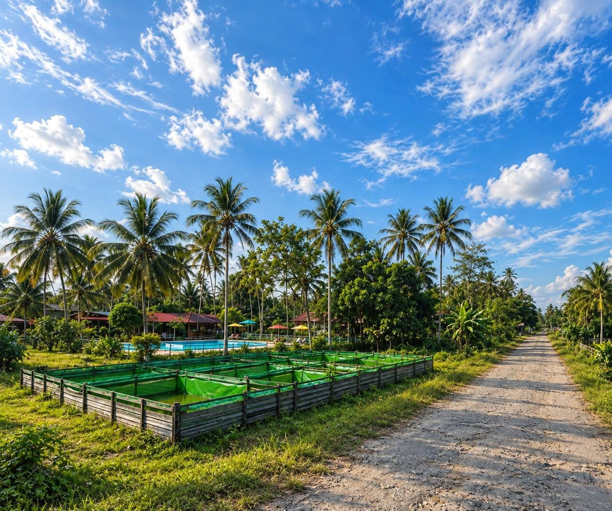
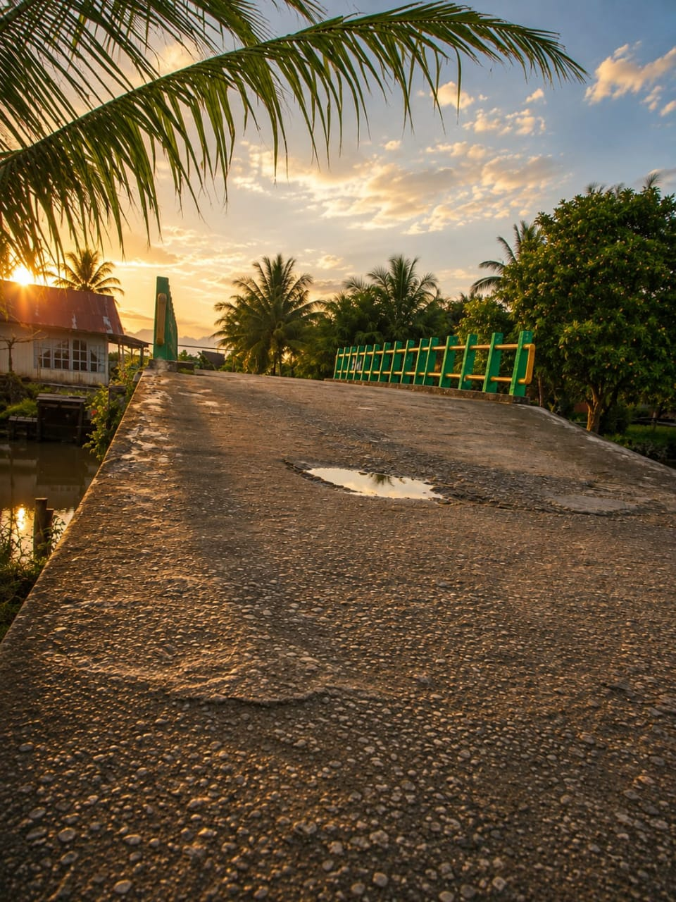

MENJELAJAHI DESA
Menemukan pesona sederhana di setiap sudut Desa Sepinggan Kecil.
Mulai Menjelajah ↓PESONA YANG SEDERHANA
Ada keindahan yang hadir dengan sederhana. Hamparan sawah, jalan desa, pepohonan, dan langit yang luas menjadi bagian dari pesona Desa Sepinggan Kecil.
MENIKMATI SUASANA

Cahaya pagi yang lembut menyelimuti persawahan dan menghadirkan suasana desa yang tenang.

Hamparan hijau dan langit luas menghadirkan suasana pedesaan yang sederhana.

Perubahan warna langit menjadi penutup hari yang menghadirkan suasana hangat dan damai.
JELAJAHI LEBIH JAUH
Hijau dan luas, menjadi salah satu pemandangan yang melekat dengan suasana pedesaan.
Pepohonan yang memberikan suasana teduh dan membuat lingkungan desa terasa lebih alami.
Jalan sederhana yang membawa kita melewati berbagai sisi kehidupan dan pemandangan desa.
Sisi alami desa yang menghadirkan suasana sejuk dan menenangkan.
Lingkungan sederhana yang mencerminkan karakter dan suasana pedesaan.
Langit yang selalu berubah memberikan warna berbeda di setiap waktu.
SEPINGGAN KECIL